1. Luas sebuah segitiga adalah 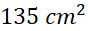dan panjang alasnya 18 cm. Berapakah tinggi segitiga tersebut?
Penyelesaian
Diketahui: L = , Alas = 18 cm
Ditanya: Berapakah tinggi segitiga?
Jawab:
Tinggi = 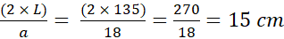
Jadi Tinggi Segitiga adalah 15 cm
2. Panjang alas suatu segitiga adalah 12 cm dan tingginya 5 cm. Luas segitiga itu adalah?
Penyelesaian
Diketahui: alas = 12 cm, tinggi = 5 cm
Ditanya: luas segitiga?
Dijawab:
Jadi luas segitiga =
3. Luas sebuah Segitigadan tingginya 6 cm. Berapakah alas segitiga tersebut?
Penyelesaian
Diketahui: Luas = 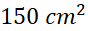 t = 6 cm
Ditanya: alas segitiga?
Di Jawab:
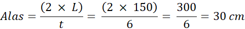
Jadi alas segitiga = 30 cm
4. Sebuah segitiga sama sisi dengan ketiga sisinya 4 cm, Berapakah keliling segitiga sama sisi?
Penyelesaian
Diketahui: sisi = 4 cm
Ditanya: keliling segitiga?
Jawab:
Jadi keliling segitiga = 12 cm
5. Diketahui segitiga sama kaki mempunyai sisi alas 3 cm dan panjang sisi kaki 6 cm. Berapakah keliling segitiga sama kaki?
Penyelesaian
Diketahui: alas = 3 cm, b (panjang kaki) = 6 cm
Ditanya: keliling segitiga sama kaki?
Di jawab:
K = a + 2b = 3 + (2 6) = 3 + 12 = 15 cm
Jadi keliling Segitiga sama kaki = 15 cm
6. Diketahui segitiga ABC siku-siku di B. Jika luas segitiga ABC dan panjang AB = 14 cm, maka panjang BC adalah .... cm
Penyelesaian
Diketahui luas = Ditanyakan panjang BC (alas)?
L = 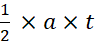
105 = 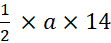
a = 105 x 2 : 14
a = 15 cm
Jadi alas Segitiga = 15 cm
7. Sebuah tambak udang berbentuk segitiga sama sisi dengan panjang sisinya 12 meter. Tambak tersebut akan dikelilingi pagar kawat 3 tingkat. Berapa meter kawat yang dibutuhkan?
Penyelesaian
Diketahui panjang sisi = 12 m
Pagar kawat = 3 tingkat
Ditanyakan panjang kawat yang
diperlukan?
Untuk mengetahui panjang kawat yang
diperlukan, kita harus menghitung keliling segitiga
K = 3 x sisi
K = 3 x 12 m
K = 36 meter
Kawat yang diperlukan = K x 3
Kawat yang diperlukan = 36 m x 3 =
108 meter
Jadi, kawat yang dibutuhkan
adalah 108 meter
8. Kebun Pak Warso berbentuk segitiga dengan panjang tiap sisi adalah 6 m, 8 m, dan 10 m. Di sekeliling kebun tersebut akan dipasang pagar dengan biaya Rp 75.000,00 per meter. Berapakah biaya yang diperlukan untuk pemasangan pagar kebun Pak Warso?
Penyelesaian
Diketahui panjang tiap sisi = 6 m, 8 m, dan 10 m
Biaya = Rp 75.000,00/meter
Ditanyakan total biaya yang
diperlukan?
Untuk menghitung biaya yang
diperlukan, maka kita harus menghitung keliling segitiga.
K = sisi a + sisi b + sisi c
K = 6 m + 8 m + 10 m
K = 24 meter
Biaya yang diperlukan = K biaya per meter
Biaya yang diperlukan = 24 meter x Rp 75.000,00/meter
Biaya yang diperlukan = Rp
1.800.000,00
Jadi biaya yang diperlukan untuk pemasangan pagar = Rp 1.800.000,00
9. Sebuah segitiga sama kaki dengan panjang sisi yang sama 50 cm dan tingginya 14 cm. Hitunglah luasnya!
Penyelesaian
Diketahui panjang sisi (sisi miring) = 50 cm,
tinggi = 14 cm
Ditanyakan luas?
Untuk menghitung luas segitiga, kita
harus mencari panjang alasnya dengan cara menggunakan Rumus Pythagoras
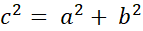
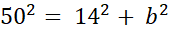
b = √2.304
b = 48 cm
Panjang alas = 48 cm
Panjang alas segitiga sama kaki = 2
x 48 = 96 cm
Jika digambar akan seperti di bawah ini
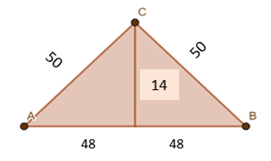
Gambar 12 (Segitiga)
L = 1/2 x a x t
L = 1/2 x 96 x 14
L = 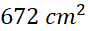
Jadi, luas segitiga sama kaki
adalah 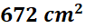
10. Sebuah taplak meja berbentuk segitiga sama sisi dengan panjang sisinya 1,5 meter. Di sekeliling taplak meja dihiasi mawar flanel yang berjarak 5 cm antara satu dan yang lainnya. Banyaknya mawar flanel pada taplak meja tersebut ada.
Penyelesaian
Diketahui panjang sisi segitiga = 1,5 m
Jarak mawar flanel = 5 cm
Ditanyakan jumlah mawar flanel?
Untuk menghitung jumlah mawar
flanel, kita harus menghitung keliling taplak meja
K = 3 x panjang sisi
K = 3 x 1,5 m
Keliling taplak meja = 4,5 m = 450
cm
Banyak mawar flanel = keliling kebun
: jarak mawar flanel
Banyak mawar flanel = 450 : 5
Banyak mawar flanel = 90
Jadi banyaknya mawar flanel pada
taplak meja = 90